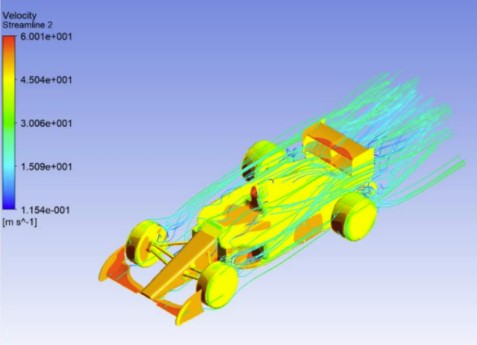

Drag Force comparison with F-1 Car
No matter how slowly a car is going, it takes some energy to move the car through the air. This energy is used to overcome a force called Drag Force. In this project we calculate the coefficient of drag generated by a bus and a sports car and compared with Formula-1 car, and also compare the flow of air around the vehicle.
It was observed that the drag force experienced by the bus is more than sports car. The downward force is maximum in the Formula-1 Car as the car needs high traction which in turn increases the speed and stability of the car while cornering.